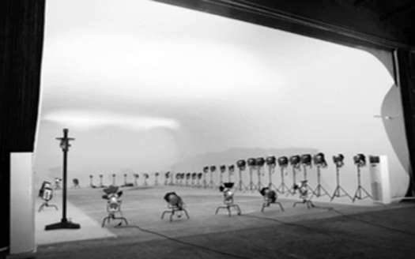
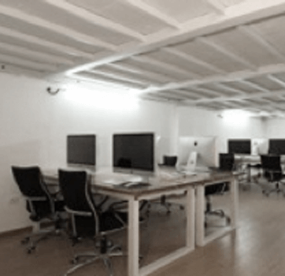

服务客户Vientiane photography agency was founded in 2008 in Beijing, Beijing, Shanghai, Guangzhou has three studios, headquartered in Beijing CBD business district.To print advertising planning, implementation and maintenance of the main post, and another 3D animation production, film and television advertising production and micro film shooting.Vientiane photography agency was founded in 2008 in Beijing, Beijing, Shanghai, Guangzhou has three studios, headquartered in Beijing CBD business district.To print advertising planning, implementation and maintenance of the main post, and another 3D animation production, film and television advertising production and micro film shooting.
团队招聘Vientiane photography agency was founded in 2008 in Beijing, Beijing, Shanghai, Guangzhou has three studios, headquartered in Beijing CBD business district.To print advertising planning, implementation and maintenance of the main post, and another 3D animation production, film and television advertising production and micro film shooting.Vientiane photography agency was founded in 2008 in Beijing, Beijing, Shanghai, Guangzhou has three studios, headquartered in Beijing CBD business district.To print advertising planning, implementation and maintenance of the main post, and another 3D animation production, film and television advertising production and micro film shooting.
p招兵买马Vientiane photography agency was founded in 2008 in Beijing, Beijing, Shanghai, Guangzhou has three studios, headquartered in Beijing CBD business district.To print advertising planning, implementation and maintenance of the main post, and another 3D animation production, film and television advertising production and micro film shooting.Vientiane photography agency was founded in 2008 in Beijing, Beijing, Shanghai, Guangzhou has three studios, headquartered in Beijing CBD business district.To print advertising planning, implementation and maintenance of the main post, and another 3D animation production, film and television advertising production and micro film shooting.
Beijing, Shanghai, Guangzhou has three studios, headquartered in Beijing CBD business district.To print advertising planning, implementation and maintenance of the main post, and another 3D animation production, film and television advertising production and micro film shooting.
Beijing, Shanghai, Guangzhou has three studios, headquartered in Beijing CBD business district.To print advertising planning, implementation and maintenance of the main post, and another 3D animation production, film and television advertising production and micro film shooting.
Beijing, Shanghai, Guangzhou has three studios, headquartered in Beijing CBD business district.To print advertising planning, implementation and maintenance of the main post, and another 3D animation production, film and television advertising production and micro film shooting.
Beijing, Shanghai, Guangzhou has three studios, headquartered in Beijing CBD business district.To print advertising planning, implementation and maintenance of the main post, and another 3D animation production, film and television advertising production and micro film shooting.
万象影棚
国内一流的广告、汽车摄影棚
为万象时尚影像制作机构旗下
独立运营机构
Equipped with large television lights, German DLL, love, and otherprofessional exquisite Lite lighting equipment, can meet various requirements.Equipped with large television lights, German DLL .
Detial

